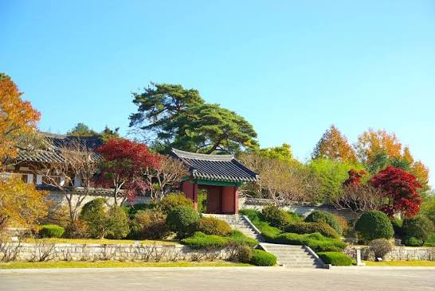

🏯 오죽헌Ojukheon
보물 · 조선시대 유적지National Treasure · Joseon-era heritage
율곡 이이와 어머니 신사임당이 태어난 조선시대 고택으로, 우리나라에서 가장 오래된 주거 건축 중 하나이자 보물로 지정된 강릉 대표 유적지입니다. 율곡이 태어난 몽룡실, 영정을 모신 문성사, 율곡기념관과 수령 600년의 율곡매를 만날 수 있습니다.A Joseon-era house where the great scholar Yulgok Yi I and his mother Shin Saimdang were born. One of Korea's oldest residential buildings and a designated National Treasure, it features Mongnyongsil (Yulgok's birth room), the Munseongsa shrine, the Yulgok Memorial Hall, and a 600-year-old plum tree.